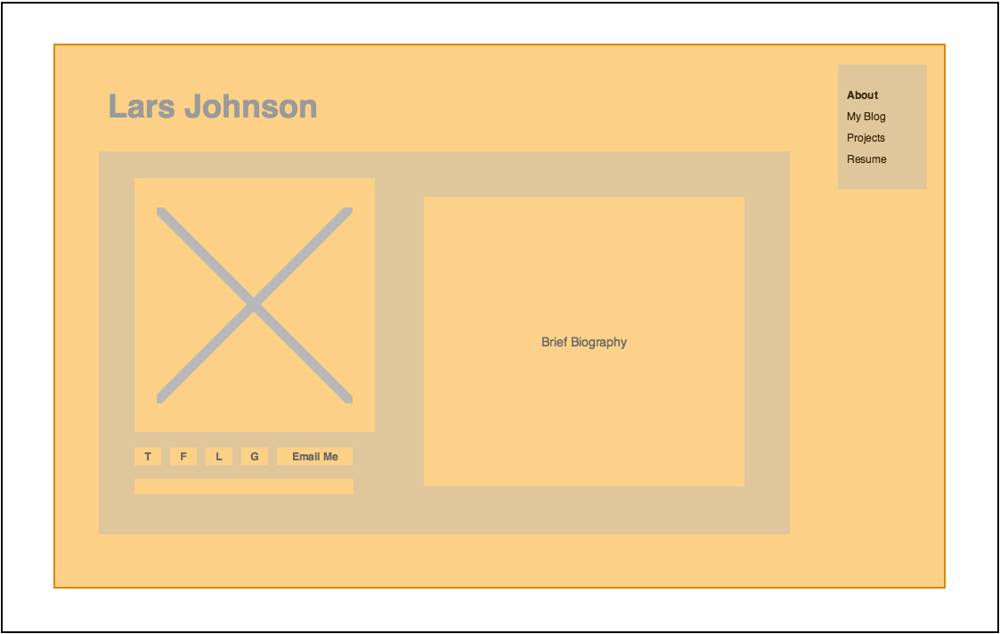
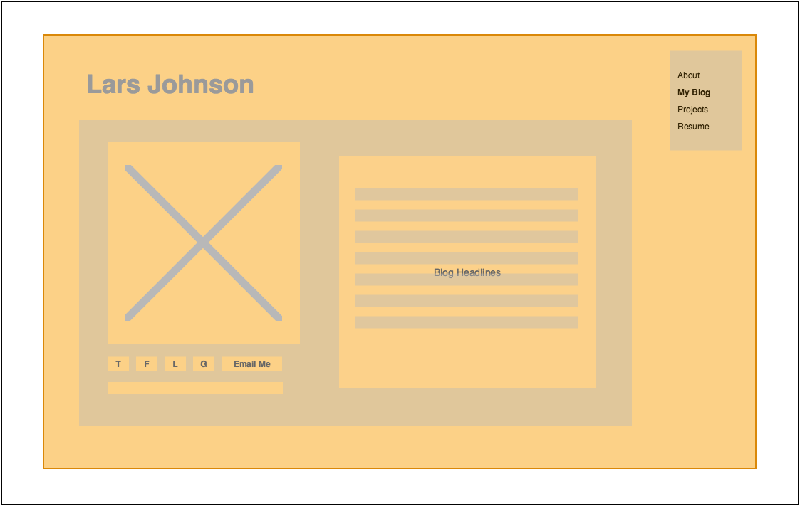

My original wireframes
Sept 25, 2015 -- A design I can build to
Evolving mock-ups : VERSION 1
Part of learning how to design and implement a website, is creating a wireframe or a simple representation of what that site should look like on the screen.
I have been evolving the wireframes for this site over the last 3 weeks, and the following are my first iteration of the home page and blog index/content that you will find here. Each iteration of this wireframe has been adjusted to align with my growing knowledge of HTML and CSS.

